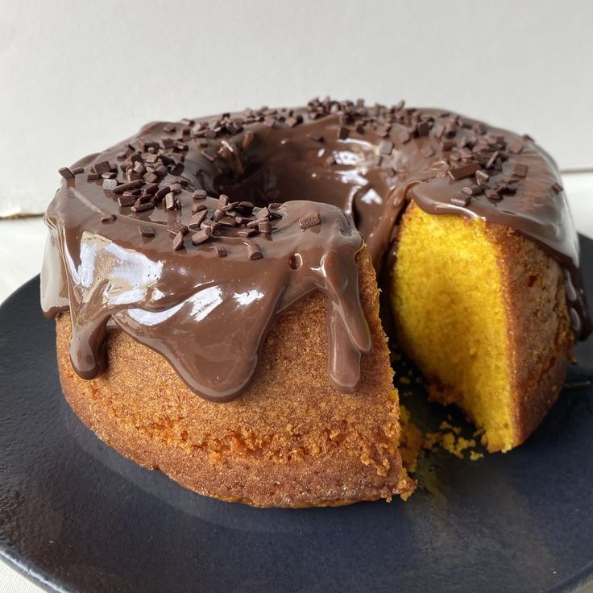

Veja como preparar um bolo de cenoura super fofinho com uma cobertura cremosa de brigadeiro que deixa tudo ainda mais irresistível. Essa combinação clássica é uma das favoritas dos brasileiros e perfeita para qualquer ocasião, desde o café da tarde até comemorações especiais. Com massa leve, sabor marcante e uma cobertura chocolatuda deliciosa, esse bolo traz aquele gostinho caseiro cheio de conforto e carinho.

Médio
1h15min
Projeto para fins
acadêmicos, feito
com amor pela aluna
Lívia Faccin
Copyright © 2026 Sweet Bytes